Our current model of production and consumption generates huge amounts of waste because many products and raw materials are not reused or recycled. A speculative design project exploring how circular economy principles can reshape consumption — and what our relationship to waste might look like if we were forced to consume it ourselves.
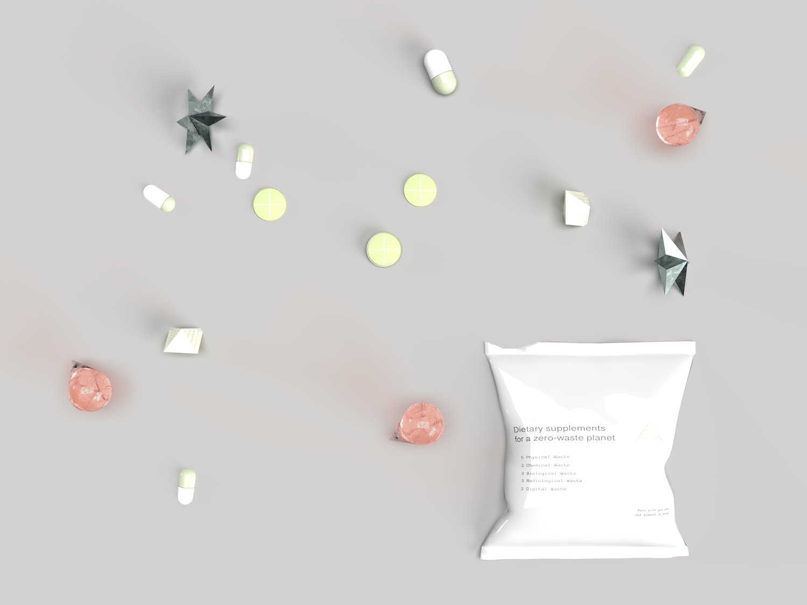
The project reframes the traditional food pyramid through the lens of waste consumption. Rather than nutritional categories, a reimagined pyramid depicts five main sources of waste "nutrients": physical waste, chemical waste, biological waste, radiological waste, and digital waste.
The premise is deliberately provocative: if waste were something we ingested rather than discarded, how would our production and consumption habits change? Individual waste production varies dramatically based on income, race, geographical location, and education level — this project makes those inequities visible.
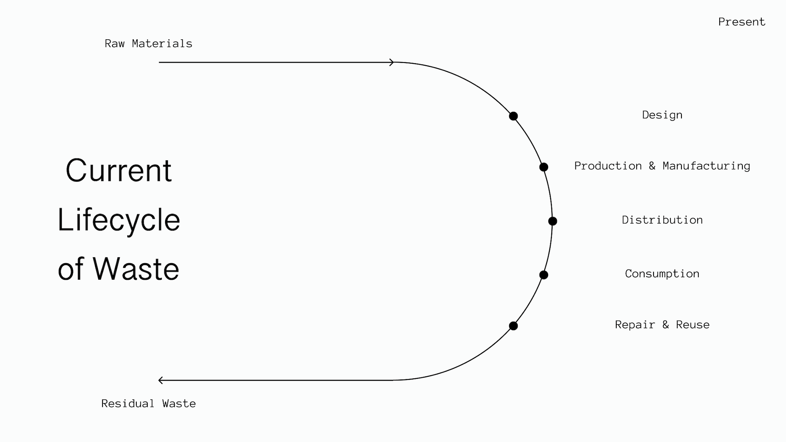
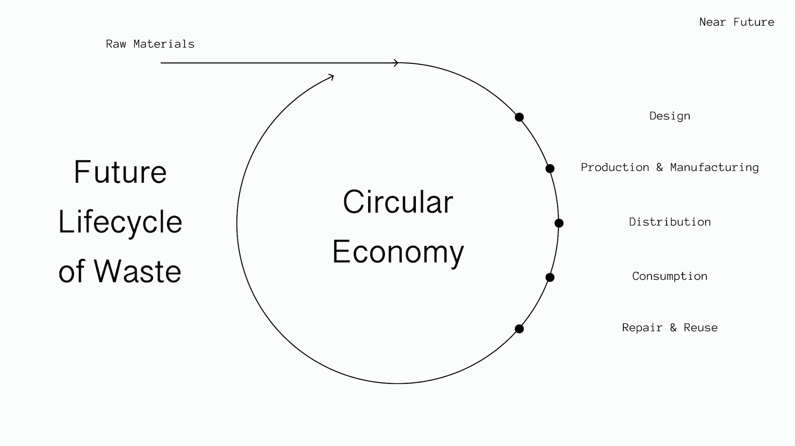
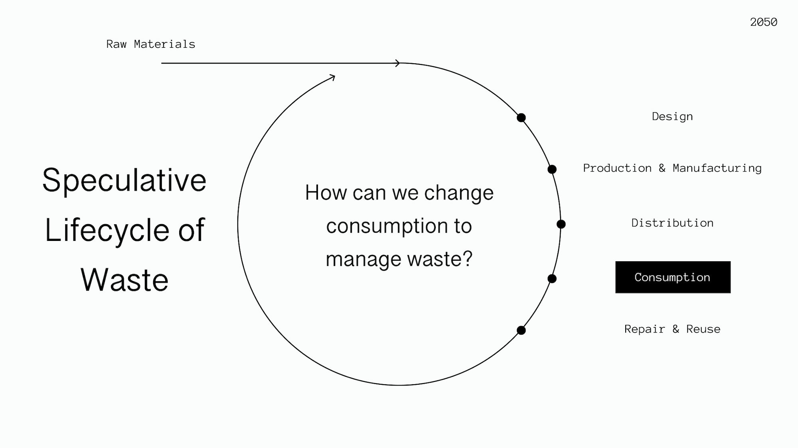
The food pyramid is a culturally entrenched visual framework for individual consumption guidance. Subverting it required a design that was immediately recognizable and then deeply unsettling — maintaining the visual logic while replacing its content with waste categories.
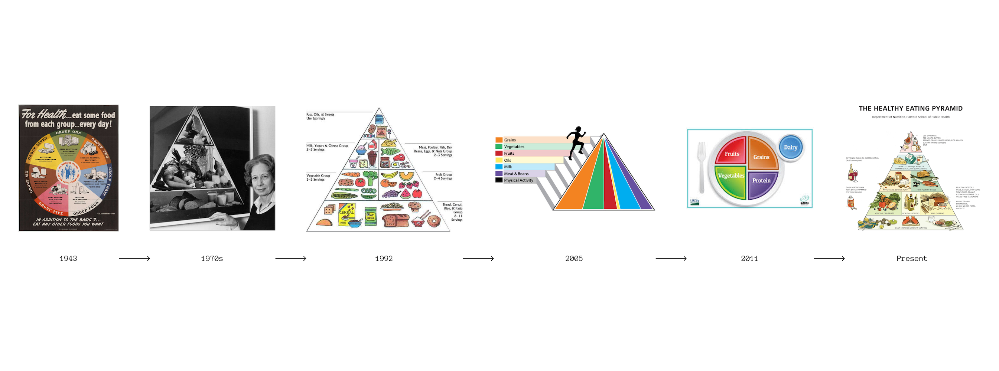
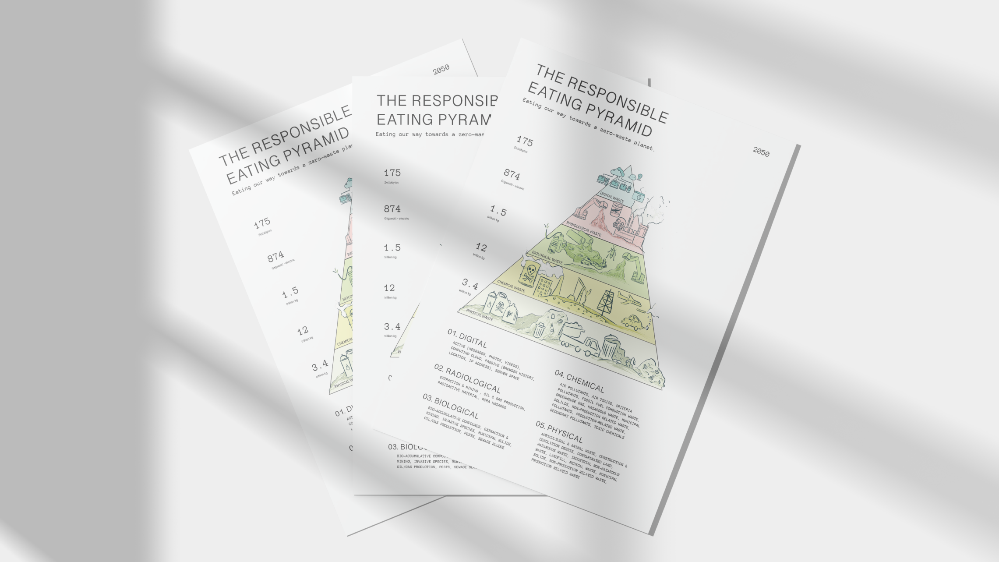
The second half of the project proposes a system of customized supplements enabling the digestive processing of different waste types. Supplement formulations correlate to severity of waste effects — the rounder and smaller the pill, the easier to digest. Each supplement is personalized to individual waste profiles based on demographic data.
The supplements are 3D modeled with material properties that evoke both pharmaceutical packaging and the waste streams they represent.
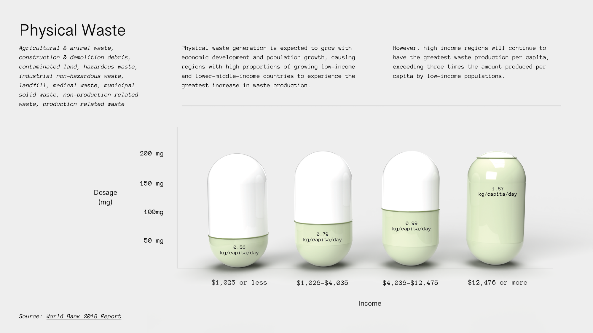
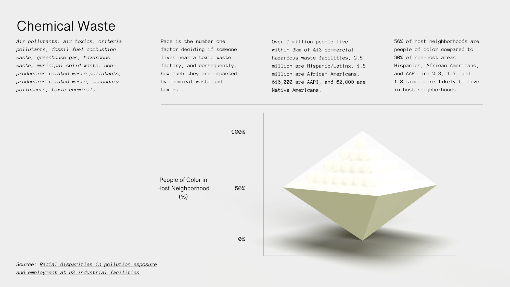
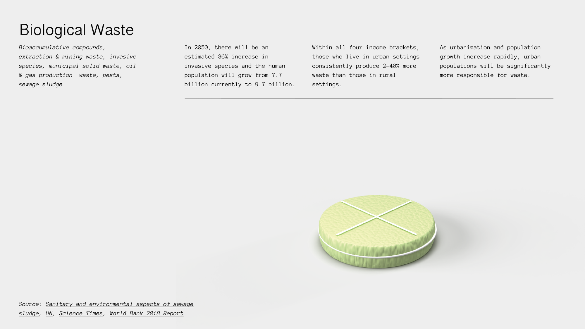
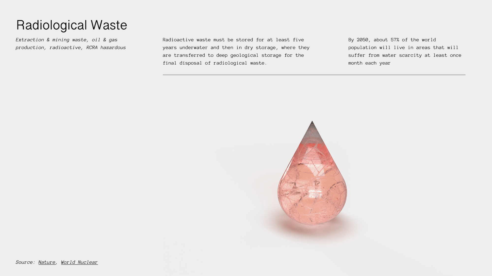
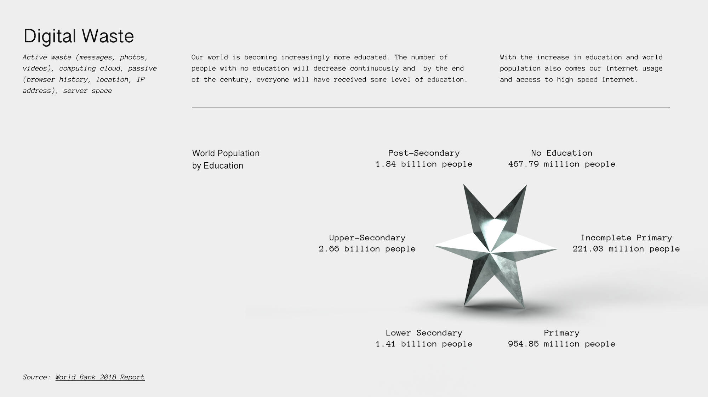
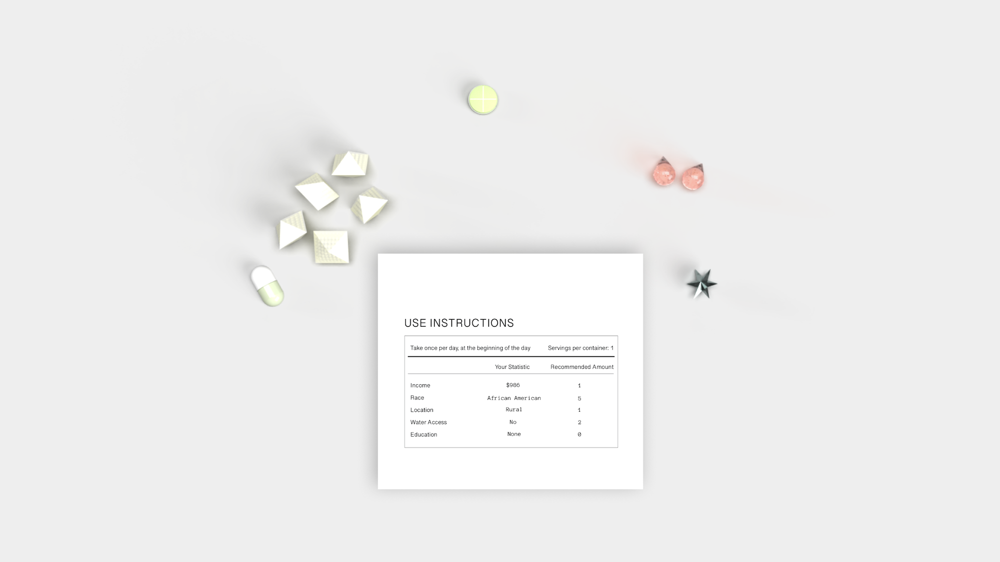
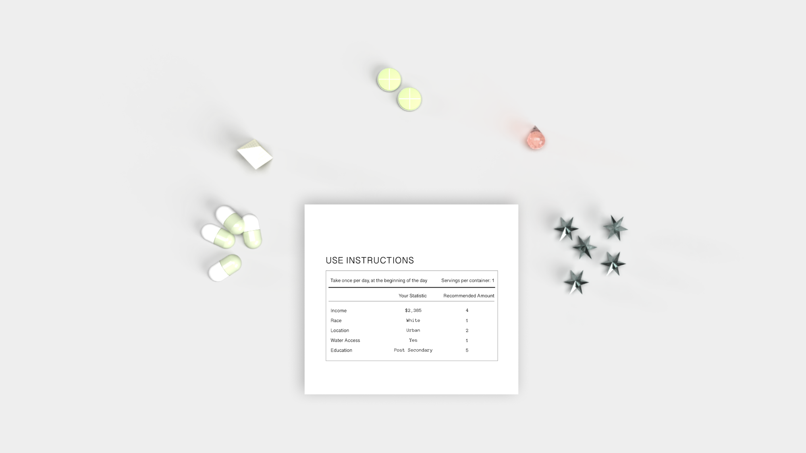
By placing the individual at the center of their own waste system — literally ingesting what they produce — the project forces a reckoning with how unevenly waste is distributed. The speculative premise makes abstract statistics visceral: if you live near an industrial facility, your supplement would look very different from someone in a wealthy suburb.